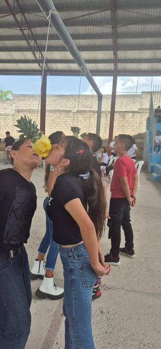

El Día del Estudiante se celebra en Honduras el 11 de Junio de cada año, ya que esta fecha hace alusión al nacimiento del prócer hondureño, José Trinidad Reyes .Durante la celebración del Día del Estudiante, se organizan una variedad de actividades deportivas, culturales y académicas, que incluyen competencias, presentaciones artísticas y conferencias educativas. También es habitual organizar manifestaciones pacíficas para destacar los derechos de los estudiantes y promover una educación de calidad. La importancia del Día del Estudiante radica en reconocer el papel fundamental que cumplen los estudiantes dentro de la sociedad, representando el futuro de una nación. Esta celebración destaca su dedicación, esfuerzo y contribución a la construcción de una comunidad más educada y consciente.

